Lesson Overview
The scan opens with a heating experiment and a flame image. The lesson has three main strands: heat energy, temperature and changes of state; transfer of heat by conduction, convection and radiation; and the effects of heat on solids, liquids and gases.

Thermal energy comes from the motion of particles and is measured in joules.
Temperature describes hotness and tracks the average kinetic energy of particles.
Heat moves by conduction, convection, and radiation.
Heating usually causes expansion; cooling usually causes contraction.
Thermal Energy And Particles
Matter is made up of small particles: atoms and molecules. These particles are in constant motion and have kinetic energy. When the same kind of particles with the same mass move faster, they have more kinetic energy.
- Energy causes atoms and molecules to move, collide, or vibrate back and forth.
- Particle motion is the microscopic basis of heat.
- The more particles there are, the more total thermal energy an object can contain.
- Heat is a form of energy.
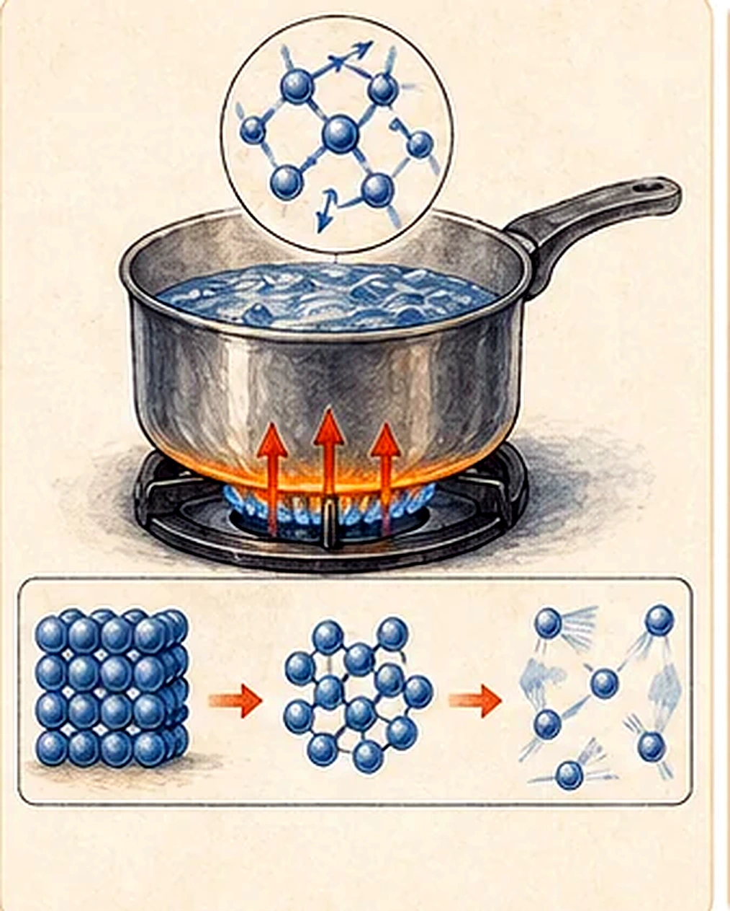
Joule note from the scan: James Prescott Joule (1818-1889) helped show that heat is a type of energy. His paddle-wheel experiment converted mechanical work into thermal energy, demonstrating that water can be warmed without using fire.
Heat And Temperature
Heat is a form of energy. The standard unit of energy is the joule, J. When heat transfers to an object, the energy transferred depends on the mass of the object, the substance it is made from, and the change in temperature.
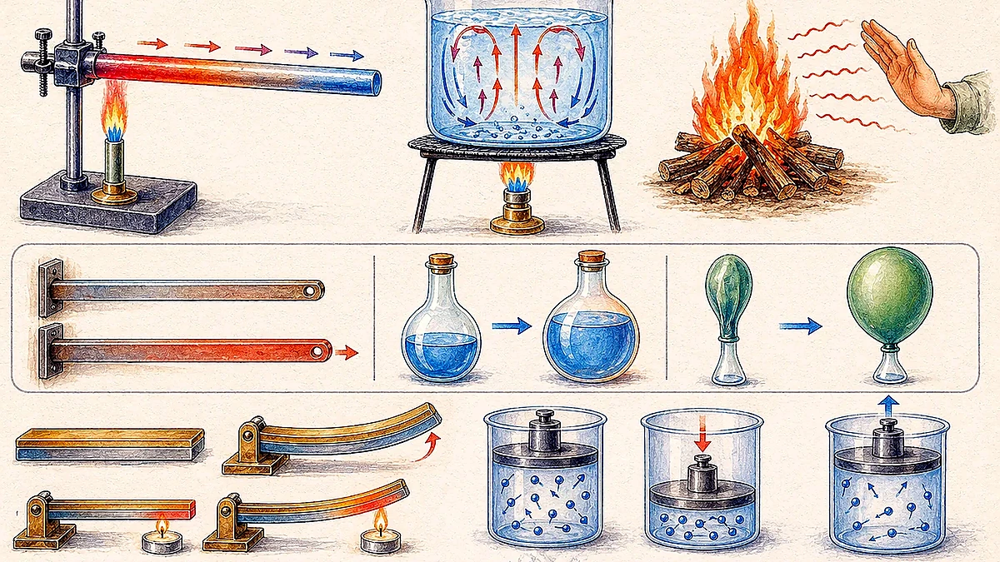
E = c m ΔT
Here, E is heat energy transferred, c is specific
heat capacity, m is mass, and ΔT is the
temperature change.
| Substance | Specific heat, J/(kg K) | Study meaning |
|---|---|---|
| Water | 4186 | Needs a lot of energy to warm; temperature changes slowly. |
| Beryllium | 1820 | Higher than common metals listed below. |
| Aluminium | 900 | Warms more easily than water. |
| Glass | 837 | Poor conductor; uneven heating can cause cracking. |
| Silicon | 703 | Semiconductor material. |
| Iron (steel) | 448 | Low heat capacity compared with water. |
| Copper | 387 | Conducts heat well and warms quickly. |
| Silver | 234 | Excellent conductor. |
| Gold | 129 | Low specific heat. |
| Lead | 128 | Lowest in the scan table. |
Heat Vs Temperature
| Feature | Heat | Temperature |
|---|---|---|
| Unit | Measured in joules or calories. | Measured in degrees Celsius, kelvin, or Fahrenheit. |
| Definition | A form of internal energy or energy transferred because of a temperature difference. | A measurement of hotness; related to average particle kinetic energy. |
| Ability to do work | Heat can do work. | Temperature itself cannot do work. |
| Property | Transfers from higher temperature to lower temperature; depends on mass and material. | Increases when heated and decreases when cooled; an intensive value. |
| Is it matter? | No. | No. |
Methods Of Heat Transfer
Heat can be transferred in three ways: conduction, convection, and radiation.
Heat passes through close particles by collisions and vibration.
Heat is carried by moving liquids or gases when density changes create currents.
Heat travels as electromagnetic waves, including infrared, without needing a substance.
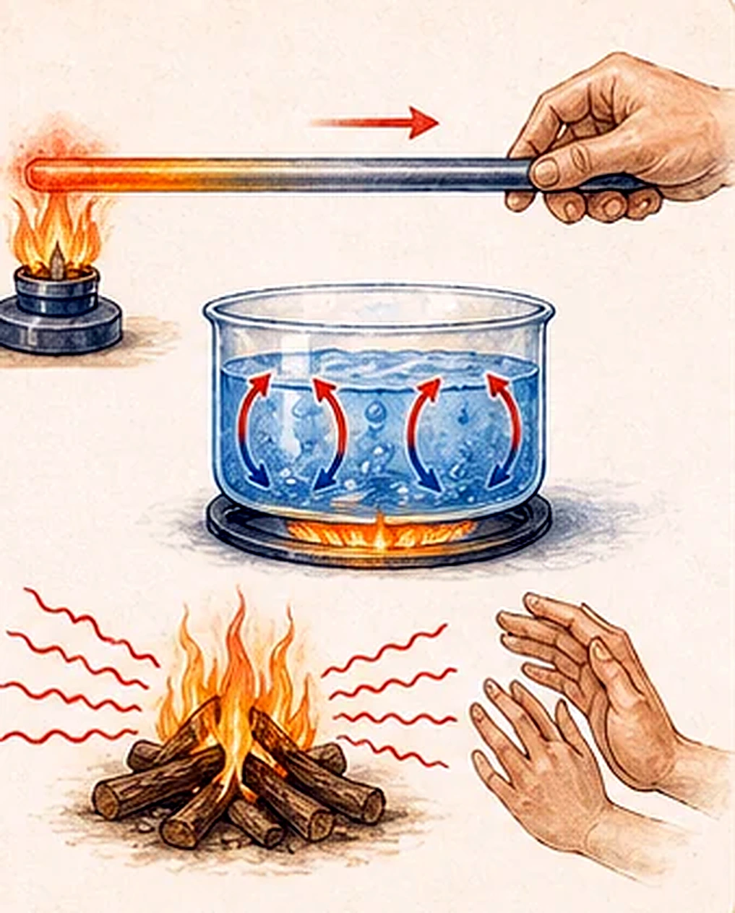
Conduction And Conductors
Conduction is heat transfer through particles that are close to each other. Kinetic energy flows from one particle to nearby particles when they collide. It occurs strongly in solids, can occur in liquids, and occurs in gases only to a smaller extent.
Why Metals Conduct Heat Well
- Metals have free electrons that move easily and transfer energy beyond adjacent particles.
- Metals have a tight crystalline structure, so vibrations pass efficiently.
- Atoms in metals are packed densely and transmit heat vibrations readily.
- Wood is made of tiny fibers that are softer and more randomly organized, so heat vibrations are conducted less efficiently.
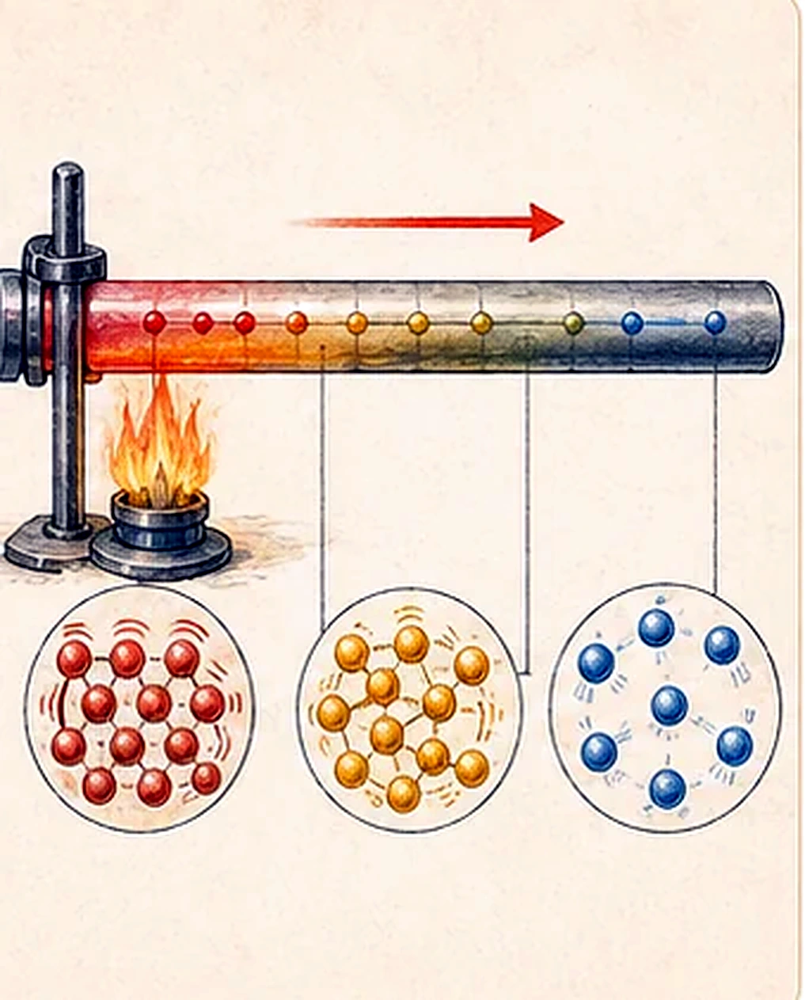
Good And Poor Conductors
| Good conductors of heat | Poor conductors of heat |
|---|---|
| Silver | Plastic |
| Copper | Wood |
| Aluminium | Air |
| Tin | Cork |
| Iron | Water |
| Stone | Styrofoam |
| Graphite | |
| Diamond |
Thermal Conductivity Values
| Substance | Thermal conductivity, W m-1 K-1 |
|---|---|
| Air | 0.026 |
| Styrofoam | 0.033 |
| Water | 0.6089 |
| Concrete | 0.92 |
| Copper | 384.1 |
| Natural diamond | 895-1350 |
Why cotton, down feather, wool and fur insulate: they trap many tiny pockets of air. Air is a poor conductor, so less heat escapes. The scan also notes that polar bears have white fur for camouflage, black skin, and hollow hairs.
Building insulation is important because it reduces heat flow: in winter it slows heat loss from warm rooms, and in summer it slows heat gain from outside.
Convection
When water at the bottom of a flask is heated, it gains heat from the flame, expands, and becomes less dense than the surrounding water. The less dense water rises. Cooler water at the top is denser and sinks. This density difference causes a convection current.
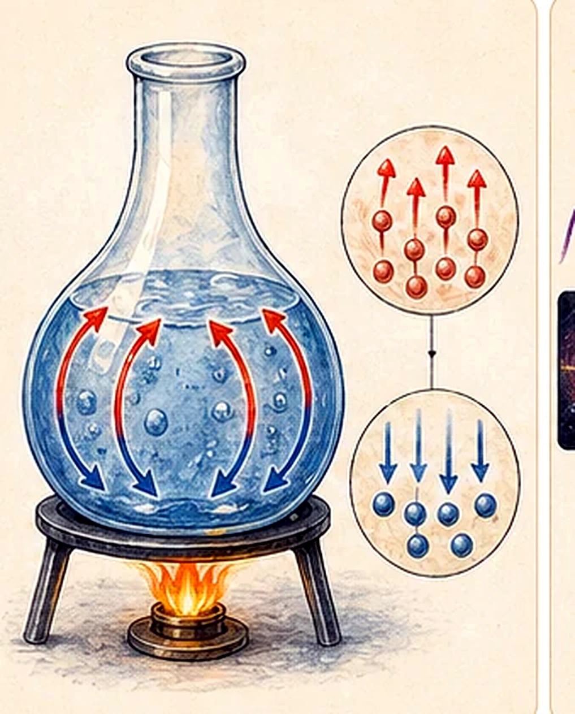
The same idea explains room heating: warm air rises above a radiator, cooler air falls near cold windows, and a circulation pattern forms.
Radiation, Light, And Heat
Radiation is heat traveling in the form of visible and non-visible light. It transfers energy directly without having to travel through a substance. Infrared radiation has longer wavelength than visible light and can carry heat from warm objects to cooler objects.
Sunlight is the main source of heat for homes.
Electromagnetic radiation generated by thermal motion of particles in matter.
Dark colours absorb more radiation; shiny or light colours reflect more radiation.
All matter warmer than absolute zero emits thermal radiation.
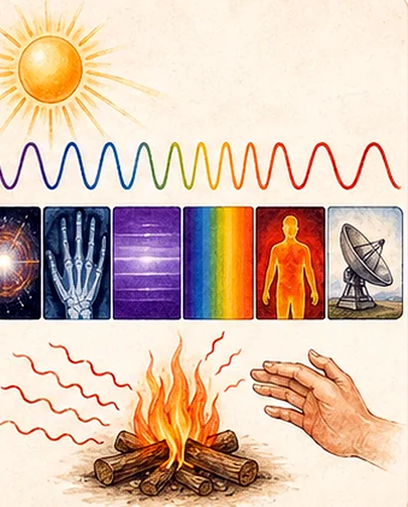
Infrared is used in heat sensors, thermal imaging, and night vision equipment. You can feel infrared heat from a hot stove element even across a room.
Microwave ovens convert electrical energy into microwaves. These make molecules, especially water molecules, vibrate and heat the food.
Flame note from the scan: a luminous flame is used for lighting, while a non-luminous flame is used for heating.
Effects Of Heat: Expansion And Contraction
In general, when matter gains heat it expands and occupies more space. When matter loses heat, it contracts and occupies less space. Solids, liquids and gases all expand when they gain heat.
Usually expand the least because particles stay in fixed positions and vibrate more.
Usually expand more than solids because particles can move past each other.
Expand and contract significantly more than solids and liquids.
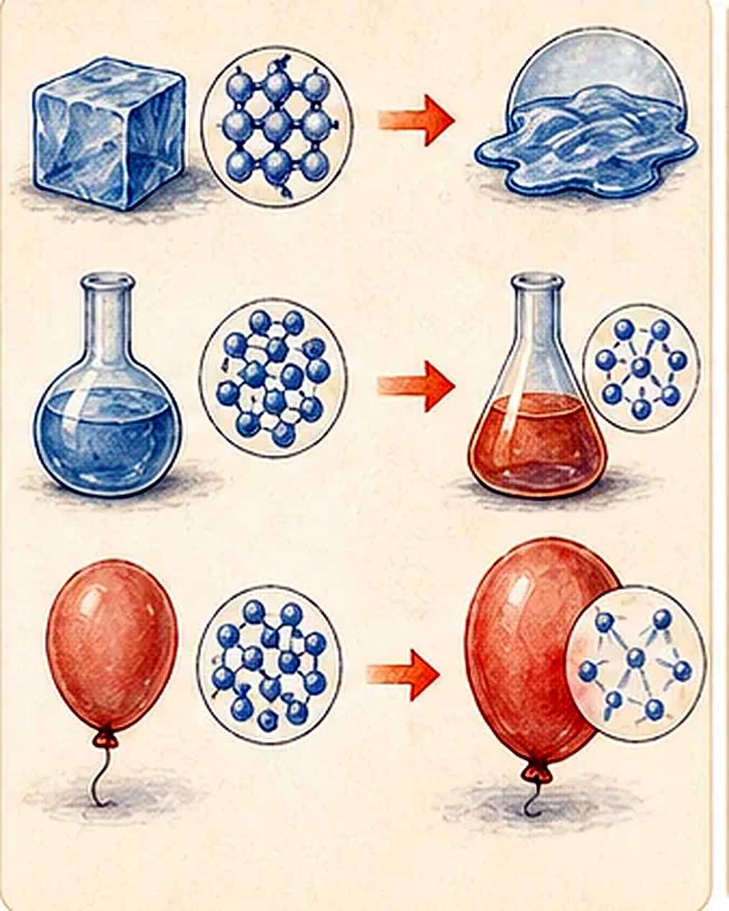
Solid Expansion And Contraction
The relative expansion divided by the change in temperature is called the material's coefficient of linear thermal expansion. It generally varies with temperature.
Coefficients In The Scan
| Material | Fractional expansion per degree C x 10-6 |
|---|---|
| Glass | 9 |
| Quartz, fused | 0.59 |
| Aluminium | 24 |
| Brass | 19 |
| Copper | 17 |
| Iron | 12 |
| Plastic pipe (PE) | 50 |
50 m Pipe Example
The scan shows expansion rates for 50 m pipes with a +50 degree C temperature change. Plastic pipe types expand much more than metal pipe types; a 50 m PE pipe can expand by about 500 mm.
| Pipe type | Approximate expansion shown |
|---|---|
| PVC | about 170 mm |
| PE | about 500 mm |
| PP | about 450 mm |
| Copper | about 40 mm |
| Cast iron | about 30 mm |
| Stainless steel | about 25 mm |
| Steel | about 35 mm |
Real-World Expansion Problems
Gaps between rails provide space for iron to expand and contract between summer and winter. Without gaps, rails may bend and cause derailment.
One end of a steel bridge may rest on rollers with a gap so contraction in cold weather and expansion in hot weather do not damage the bridge.
Hot liquid heats the inside surface of a thick glass first. The inside expands while the cooler outer layer lags behind, so stress can crack the glass.
U-type expansion loops let long pipelines absorb thermal expansion and contraction.
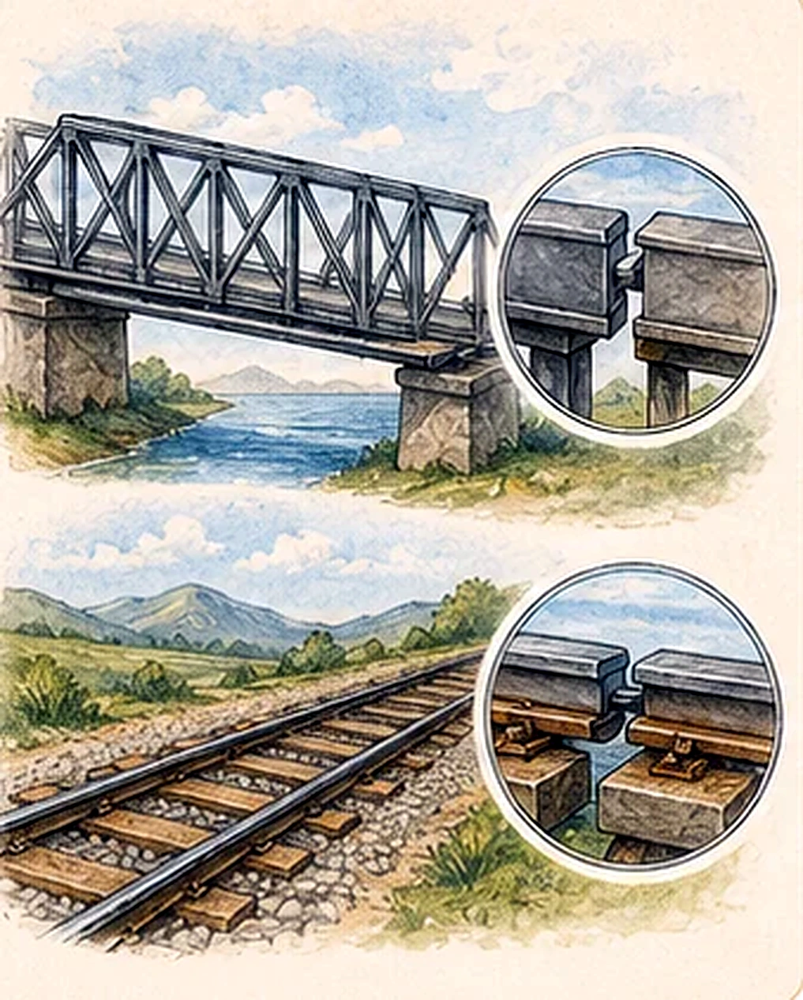
Bimetallic Strips
Bimetallic strips are used in thermostats in refrigerators, ovens, irons and heaters. They regulate temperature. By adjusting the size of the gap between the strip and the contact, the temperature setting can be controlled.
- Two different metals are bonded together.
- When heated, the metal with the higher expansion coefficient expands more.
- That metal becomes the longer side of the curve when the strip is heated.
- When cooled, it becomes the shorter side of the curve.
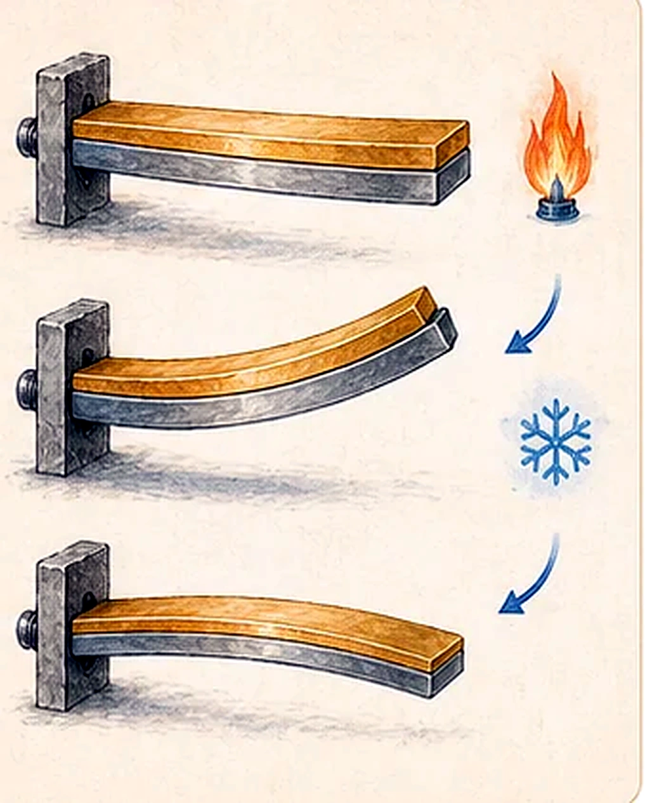
Fire Alarm Application
Liquid And Gas Expansion
Liquids
- Almost all liquids expand when heated and contract when cooled.
- Drink factories need to leave space when filling bottles or cans.
- Without allowance, bottles or cans may burst when liquid expands.
- In the scan's four-liquid comparison, water expands least and ether expands most under the same fair-test heating conditions.
Gases
- Gas molecules are much farther apart than molecules in solids and liquids.
- Gas molecules move at high speed in all directions.
- Gases expand much more than solids and liquids when heated.
- If volume can change, gas volume increases as temperature rises and decreases as temperature drops.
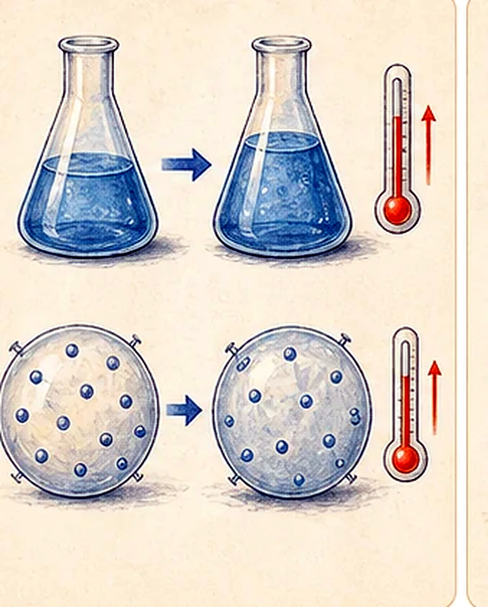
Bread and cake example: during baking, baking powder can break down and release carbon dioxide, or yeast can respire and release carbon dioxide. Gas expansion causes dough to rise.
Gas Laws And Absolute Zero
The scan links gas expansion to Charles' law and then broadens to the ideal gas law using kinetic theory.
P ∝ 1/V at constant temperature. In the scan: P1V1 = P2V2.
V ∝ T at constant pressure. In the scan: V1/T1 = V2/T2.
P ∝ T at constant volume. The scan also names it Amontons' law.
V ∝ n when temperature and pressure are constant.
PV = nRT, combining pressure, volume, amount of gas, and absolute temperature.
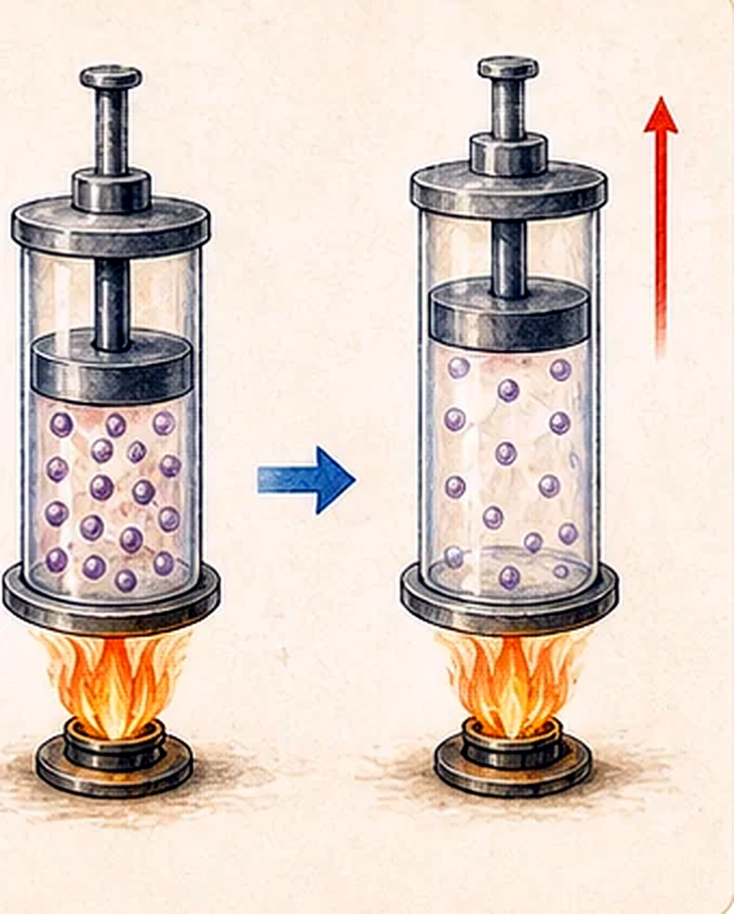
V1 is initial volume, T1 is initial absolute temperature, V2 is final volume, and T2 is final absolute temperature.
U-type pipe loops absorb expansion in long pipelines, such as oil refinery piping, and help the pipeline handle expansion, contraction, and other forces.
What Is Absolute Zero?
- Absolute zero is taken as -273.15 degrees Celsius.
- At absolute zero, nearly all molecular motion ceases.
- The kelvin temperature scale sets zero at absolute zero by definition.
- William Thomson, Lord Kelvin (1824-1907), set his scale with 0 at the temperature where all movement stops.
- Kelvin is the primary unit of temperature measurement in the physical sciences and has the same interval size as a degree Celsius.
Wrap Up
E = c m Delta T; water has a high specific heat capacity, while metals usually warm more quickly.Printed Links And Activities
- Joule's paddle-wheel experiment, misconception of temperature, aerogel, infrared radiation, light spectrum, black-body radiation, bimetallic strip, thermal insulation, gas laws, and thermodynamic-law videos were printed in the source scan.
- Experiments named in the scan include bimetallic strip, liquid expansion, and gas expansion in balloons.
Rebuilt from the Week 10 scanned PDF, IMG_20260427_0010.pdf. Repeated scan frames for conductor and radiation pages were merged, and diagrams were newly drawn in HTML/SVG for readability.